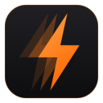

게임 최적화와 화면 캡처 방식 프레임 생성·업스케일 프로그램이에요. 게임에 주입하지 않아요. 운영체제와 설치 방식을 골라서 받으세요.
설치가 끝나면 바로 실행돼요. 시작 메뉴·바탕화면 바로가기와 제거 기능이 함께 들어가요.
설치 없이 압축을 풀고 SystemBoost.exe를 실행하면 바로 켜져요. USB에 넣고 다닐 수 있어요.
M1·M2·M3·M4 칩 Mac용이에요. 받은 설치 파일(.pkg)을 열고 안내대로 설치하세요.
Intel 칩 Mac용이에요. 내장 + 외장 그래픽이 있는 Mac은 듀얼 GPU 옵션을 쓸 수 있어요.
어떤 칩인지 모르면: 화면 왼쪽 위 Apple 메뉴 → 이 Mac에 관하여 → '칩' 항목이 Apple M…이면 Apple Silicon, '프로세서'에 Intel이 보이면 Intel이에요.
아직 Apple 서명이 없어서 처음 열면 보안 경고가 떠요. 시스템 설정 → 개인정보 보호 및 보안에서 '그래도 열기'를 누르면 설치할 수 있어요.
| Windows | macOS | |
|---|---|---|
| 프레임 생성 (자동·2~8배) | ● | ● |
| 업스케일링 + 선명화 | ● | ● |
| 듀얼 GPU | ● | Intel Mac |
| 벤치마크·기록 | ● | ● |
| RAM·GPU·CPU 부스트, 오버클럭 | ● | — |
| 게임 부스트 | ● | ● |
| 백업·원클릭 되돌리기 | ● | ● |
프레임 생성 배수는 무료 2배, 프로 자동·3·4배, 울트라 6·8배까지예요. 듀얼 GPU, 게임별 자동 최적화, 오버클럭은 울트라 전용이에요. 출력 FPS는 기본으로 모니터 주사율을 따르고, 더 높게 정해도 모니터는 자기 주사율까지만 표시해요.
macOS의 게임 부스트는 저전력 모드 끄기, 백업·색인 멈추기, 무거운 앱 정리예요. RAM·GPU·CPU 항목은 macOS가 허용하지 않아서 없어요.
프레임 생성은 다음 프레임을 기다려야 해서 입력 지연이 늘어나요. 경쟁 게임에는 권장하지 않아요. 추가 지연은 프로그램 화면에 측정값으로 표시돼요.